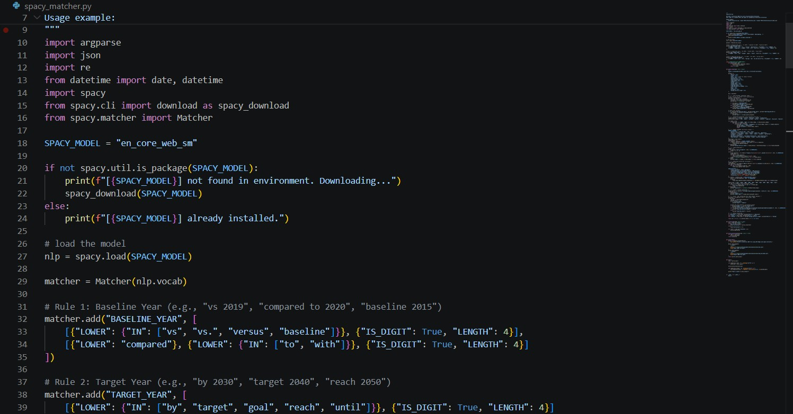
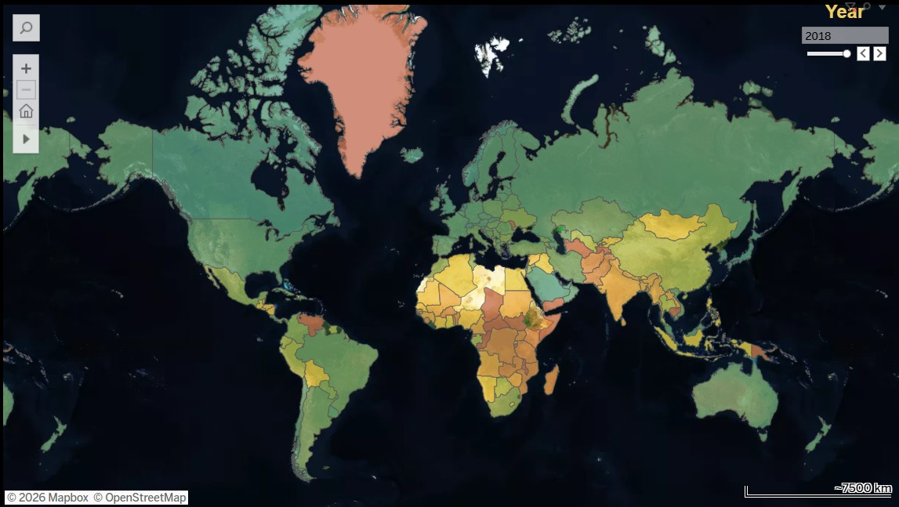
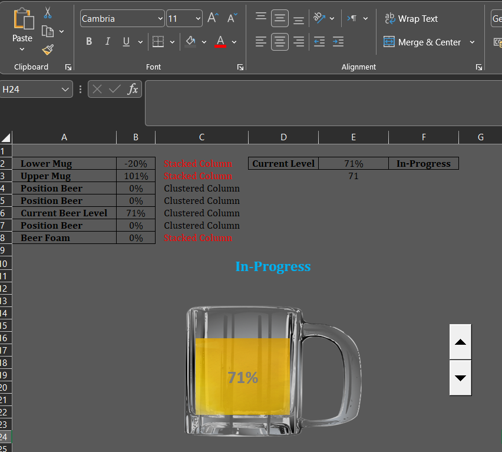

For managers
Compare hotel and dining sentiment, explore monthly trends and review summaries, and investigate recurring service themes. Filter by date, platform and rating, with optional duplicate exclusion and credibility weighting.
Data Scientist · Applied ML · NLP · Generative AI
I am a commercial data scientist with experience spanning sales, ERP implementation, business analytics and machine-learning pipelines. I combine an MSc in Data Science with a systems-optimisation background to solve complex data and business-performance challenges.
Featured independent project · Applied NLP
Separate the hotel stay from the dining experience. An interactive review-analysis prototype that uses DeBERTa-v3 to analyse Google Travel and TripAdvisor feedback about hotel services and restaurant experiences.
Compare hotel and dining sentiment, explore monthly trends and review summaries, and investigate recurring service themes. Filter by date, platform and rating, with optional duplicate exclusion and credibility weighting.
Adjust the balance between room comfort, sleep and check-in versus restaurant and breakfast experiences to explore a personalised, review-based match score. Browse supporting reviews by traveller type.
The demo uses a fixed dataset with precomputed sentiment scores. Match scores reflect review sentiment and selected preferences; credibility weights are heuristic. Service themes are grouped by keywords. An independent project, not commissioned or endorsed by Premier Inn.
Career path
Five roles spanning commercial leadership, analytics, enterprise systems and applied data science.
Matin Real Estate
POOYESH GHODRAT
Banian Tolid
System Group
TiiQu
Capabilities
A focused view of the tools and disciplines I use across analytics, machine learning and data systems.
Previous work · TiiQu
Data Scientist · April–October 2026
At TiiQu, I worked on semantic NLP pipelines for regulatory compliance, transforming unstructured legislative text into semantic units and vector embeddings. My work included hybrid retrieval combining dense vector search with BM25 keyword matching, and benchmarking variable-extraction approaches for traceable claim-verification workflows.
Academic foundation
My technical foundation combines an MSc in Data Science from Aston University, awarded with Distinction, with postgraduate study in Industrial Engineering and System Optimisation at the University of Tehran.
Selected work
Data engineering, machine learning and business-intelligence projects built across corporate and research environments.

Predictive modelling, automation scripts and custom analytical pipelines.
Explore repositories
Data preparation, database normalisation and complex multi-table workflows.
View queries
Operational dashboards that make business performance visible in real time.
Examine dashboards
Interactive dashboards and analytical stories across varied datasets.
View public profile
Analytical models, metric visualisation and database-driven reporting.
Review workbooksLet’s connect
Connect with me to discuss analytics, machine learning, NLP or production data pipelines.